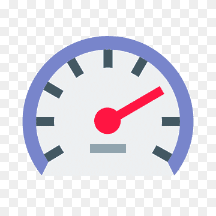

| PETROL | |
|---|---|
| 1462 cc | |
| Mileage | 17 to 18.5 kmpl |
| 5 Seater | |
| ₹ 7.82 Lakh onwards | |
| Transmission | Manual & Automatic (TC) |
There’s very little that works against the facelifted Brezza. Sure, we can nit-pick about maybe its ageing looks, or even about how the petrol engine could've been more energetic, and so on. But, on the other hand, we need to remember that this is a proven product, in a still well-rounded package. We've just spotted the new-gen Brezza testing, so it may take a while to reach showrooms.
Maruti’s Vitara Brezza is a common sight on our roads thanks to the brand striking the right cord with our Indian buyers. In-line with keeping things fresh, Maruti’s popular compact SUV received a facelift recently. So what’s new in this iteration?
Well, other than the tweaked exteriors, the Brezza now gets a revised feature-list, and the 103bhp/138Nm 1.5-litre K-series BS6 petrol engine which also powers the Ciaz and Ertiga. It is available in both manual and auto gearbox options.
Although exterior updates are kept to a bare minimum, the Brezza’s nose now reveals a generous dose of chrome on its grille, which is complemented by a pair of projector headlamps and LED DRLs. What’s more, the front bumper gets more attractive fog-lamp housings, and a restyled silver trim on the bash plate section.